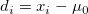
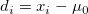
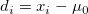
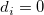
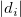
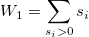
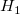
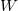

/math-d2583020b138319a535bc3c88278ab33.png "x_i\,\!") に
に/math-6b80d670336d4b43b32dbd006770a4f1.png "i=1,2,\ldots ,n") に対して、符号の差を計算します。ここで
に対して、符号の差を計算します。ここで /math-4ed1ed38631c7263bc6b664a5c510f8e.png "\mu _0\,\!") は、標本の中央値に対して与える検定値です。
は、標本の中央値に対して与える検定値です。
1群のWilcoxon符号順位検定は、正規性に疑問があるような標本の場合に、1群のt検定の代わりに使います。1群のt検定よりも条件が緩いので、t検定よりも利用範囲が広くなります。
a) 各 に に対して、符号の差を計算します。ここで は、標本の中央値に対して与える検定値です。
b) の場合は無視します。の残りを順位付けし、その順位として/math-af2593b49488f8bc44396795792c2d79.png "r_i") を使います。のタイの値がタイのランクの平均に割り当てられるように注意します。例えば、 7 8 9 で3つのが同順位であると、その順位は (7+8+9) /3=8 となります。
を使います。のタイの値がタイのランクの平均に割り当てられるように注意します。例えば、 7 8 9 で3つのが同順位であると、その順位は (7+8+9) /3=8 となります。
C) 各符号に、対応する/math-40b4081d7e04c18f0529a2e70a11e290.png "d_i\,\!") の符号が付加されます。
の符号が付加されます。/math-1e45800d815894820f5acad906bbb8e7.png "s_i=sign(d_i)r_i\,\!") のようにします。
のようにします。
d) 正の符号順位の合計は次の式で計算できます。

このサンプルでの帰無仮説は、母集団の中央値は、指定した値があるということです。ここでは、母集団が中央値を持たないという両側の対立仮説に対する帰無仮説を検定します。信頼区間は、仮説検定の形式に変換されます。検定は、1群のWilcoxon符号順位検定で、次の式で定義されます。
/math-e65765bedcabe42c66ec93228769e82a.png "H_0")
|
|
|---|---|
|  | /math-858de1a56ceb15609e7ab979a2638b00.png "\mu \neq \mu _0")
|
| 検定統計量 | /math-b1b86035c067633cdfc2a356665fc977.png "z=\frac{(W-\frac{n_1(n_1+1)}4)-\frac 12\cdot sign(W-\frac{n_1(n_1+1)}4)}{\sqrt{\frac 14\cdot\sum_{i=1}^n S_i^2}}")
ここでと |
有意水準/math-4bc6c42bbabe567d1f2516326e52b775.png "\alpha \,\!")
|
最も一般的に使われる の値は0.05です。
|
| 棄却域 | 中央値が指定した値であるという帰無仮説を棄却します。
標本サイズが大きい場合、 例えば、母集団の大きさが50以上の時の分布は、正規分布に近似されます。 |
このアルゴリズムの詳細は、nag_wilcoxon_test (g08agc)をご覧下さい。
/math-df637c345145e684f09c3e2bf73732cf.png "s_i\,\!") は上述の通り
は上述の通り/math-8d88a43872d6db6535d8672a15f09ce2.png "n_1\,\!") で、これはゼロではない
で、これはゼロではない/math-49f05dc56aa54a13a63962746c7fff75.png "\left| z\right| >Z_{\alpha /2}") が Z~N(0,1)の場合
が Z~N(0,1)の場合